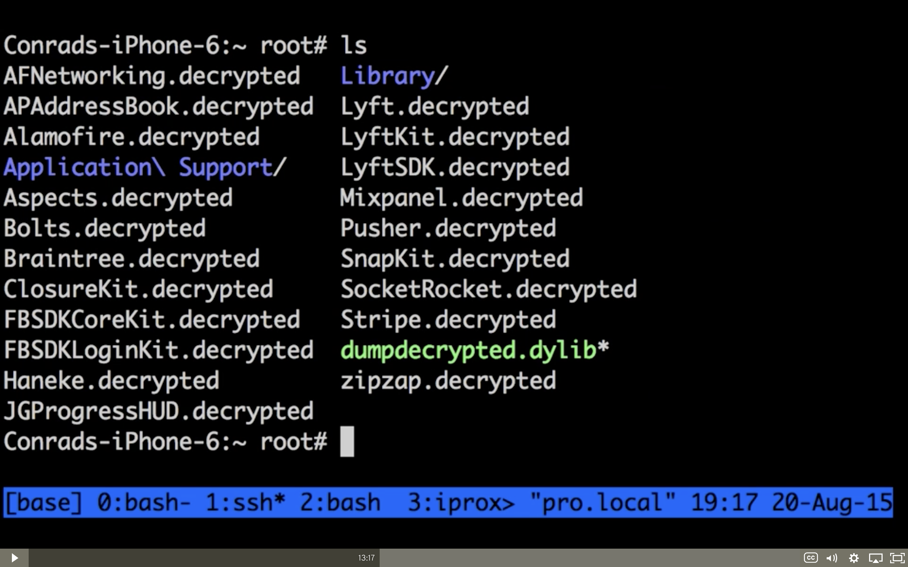

Reverse Engineering
Presenter: Yifeng Huang
89980
My Background
- Software Engineering
- Web Development(mainly Front-end. Back-end & Mobile)
- Github: https://github.com/winddweb
I learned an idom that says...
elephant in the room
Reverse Engineering is the elephant in the room
We cannot just ignore Reverse Engineering
Before we talk about
Reverse Engineering
How do Programs Work?
Programs execute and pass data
around and present them.
Have a closer look at one single machine
Examples of programming languages
| Low | Middle | High |
|---|---|---|
| Assembler | C | Java, C# |
| Forth | C++ | JavaScript, Python |
Compiled VS. Interpreted
Compiled
- Source code translated before execution
- Compiled code is run by the user
- Need to build every time you modify the source code
Interpreted
- Source code gets run directly
- Code is translated when being excuted
- Less efficient when running, but easier to develop
{kind=link}
What is reverse engineering?
Reverse engineering is the processes of extracting knowledge or design information from anything man-made and re-producing it or re-producing anything based on the extracted information.
-- Wikipedia https://en.wikipedia.org/wiki/Reverse_engineering
The process often involves disassembling something and analyzing its components and workings in detail.
-- Wikipedia https://en.wikipedia.org/wiki/Reverse_engineering
It is Hacking, anyway
So don't forget the concept of ethical hacking we've learned.
Purpose of Reverse Engineering
- Debugging
- Security evaluation
- Recover source code
- Learning
- Enhancement(Add feature, fix bug)
- Black Hat Hacking
What is our target?
Basic
- Decrypted code
- Decompiled code
Advanced
- Inject code in runtime - change software's behavior Note:
- Get secret data from software e.g. API keys for OAuth
Keep in Mind
- You can reverse engineer anything
- Never expect to hide your secrets in your product
- Ethical concerns
Several phases
in Reverse Engineering
- Knowledge
- Runtime Analysis/Code injection
- Debugging
- Disassemble/decompile
- Recompile
Knowledge
- Understand hardware, CPU, RAM, etc.
- Understand the file structure
- Experience in software development
- Programming language
- Tools
- Searching; Trial and errorr; Never give up
Let's look at some
Compiled Program first
Installation file for iOS and Android
you can easily get these files
.ipafor iOS: from iTunes App Store.apkfor android: from Google Play or other 3rd party stores
Peek into the package
The Installation package is usually a zip file.
- Just change the extension to
.zip - And unzip it.
The package contents
- Media assets are usually instantly available
- Some XML (
manifestorplist) for software configurations - Compiled code/ binary files / executable
Type of tools
- disassembler : binary --> assembly
- decompiler : binary --> source code
- debugger (dynamic analysis)
- Inspect the program while it is running
disassembler : binary --> assembly
Basically, the job of a disassembler is very simple: it just maps hexadecimal numbers to instruction mnemonics. The output of such a basic disassembler is a listing with instructions.
decompiler : binary --> source code
A decompiler is a computer program that takes an executable file as input, and attempts to create a high level source file which can be recompiled successfully. It is therefore the opposite of a compiler, which takes a source file and makes an executable.
debugger (dynamic analysis)
Debuggers offer sophisticated functions such as:
- running a program step by step,
- stopping (breaking) at some event or specified instruction by means of a breakpoint, and tracking the
valuesof variables. - Some debuggers have the ability to modify program state while it is running.
Reference: A long list of tools
- MobileApp Pentest Cheatsheet https://github.com/tanprathan/MobileApp-Pentest-Cheatsheet
- Tools for iOS http://iphonedevwiki.net/index.php/Reverse_Engineering_Tools
Demo time!
Android Demo
Tools for android:
- JEB https://www.pnfsoftware.com
- Bytecodeviewer
- Apktool https://ibotpeaches.github.io/Apktool/
- dex2jar https://github.com/pxb1988/dex2jar
- JD-GUI http://jd.benow.ca
- jadx https://github.com/skylot/jadx
- ADBI or FRIDA (Dynamic Patching) https://github.com/crmulliner/adbi https://www.frida.re/docs/android/
Workflow
- Start from an
.apk - Disassemble-decompile-debug-recompile,
all-in-one solutionJEBBytecodeviewerjadx
Alternatively Use these tools separately:
IDAdisassembler to analyze the assembly codeapktoolto get.smalicodedex2jarto convert.dexfile to.jarwhich contains.classfilesJD-GUIto displays Java source codes of.classfilesjadto generate.javafile from.classfile
Apktool demo
$ # to decompile an apk
$ apktool d example.apk
$ # to recompile one
$ akptool b example
Apktool decompile
Apktool decompiled package contents
Apktool decompiled package .smali
Apktool decompile
dex2jar demo
Convert .dex to .class files, zipped in .jar file
$ dex2jar path/to/your.apk
# -> ./path-output-dex2jar.jar
JEB demo
- open
.apkdirectly - or
.dex - the demo version is limited
- the full version contains more features

JD-GUI demo
open .jar in JD-GUI, inspect the .class files
- search for vars/methods/class...
jadx demo
Search for String
Enough Android
Let's move on to iOS
iOS Demo
Tools for iOS
- IDA https://www.hex-rays.com/products/ida/
- Hopper https://www.hopperapp.com
- Cycript (read as ssscript) http://www.cycript.org
- dumpdecrypted https://github.com/stefanesser/dumpdecrypted
- class dump
- Charles - MITM for SSL https://www.charlesproxy.com
Reason I am not
doing a real-time demo
It requires jailbroken device,
which I am not willing to do on my personal device.
Part I. Static Binary Analysis
IDA & Hopper demo
- open
.ipawith IDA or Hopper - Browsing assembly code in multiple views (graph, steps, method names, etc.)
- Find the strings you are interested
Pricing
IDA Starter Licenses start at 589 USD or 529 EUR. IDA Professional Licenses start at 1129 USD / 1019 EUR.
Hopper Disassembler v4 - Personal License $99.00
IDA
Hopper

Disassemblers
Require understanding of assembly language to analyze in depth.
Maybe not.
Reverse-Engineering iOS Apps
Conrad Kramer, Sep 7 2015
Part II. Dynamic Runtime Analysis
Cyscript
Code Injection
- Interact with a running app
- Get all the instances
- Run your code to get data or dynamically modify the app
*If you use with your own app (which you have the source), you can embed this tool in your code and debug easier.

Charles Demo
- Get your IP Address on your computer
- Set your IP as proxy on iPhone, in Settings on Port 8888
- Allow connection request from Charles
- Enable HTTPS
- Proxy -> SSL Proxy Setting
- Download the Charles cert, go to Help > SSL Proxying > Install Charles Root Certificate on a Mobile Device or Remote Browser
# MITM attack #
Encrypted contents (Gibberish) due to HTTPS

Charles certificate installed

MITM Attack

However
- Does not work for all SSL (Certification Pinning)


SSL Pinning
SSL Pinning is making sure the client checks the server's certificate against a known copy of that certificate. Simply bundle your server's SSL certificate inside your application, and make sure any SSL request first validates that the server's certificate exactly matches the bundle's certificate. https://possiblemobile.com/2013/03/ssl-pinning-for-increased-app-security/
However, however
- If the application can access it, you can see it, too.
- (Jailbreak/root your device, ) inject code in the running app, and print whatever data you need. (for example, some API key) or
- Patch the source code, remove the part of code that checks the certificate
# Code Injection #
Counter-measurements to Reverse engineering
- Don't consider anything secret that ships to your customer
- e.g. asymmetric encryption, which part of the key is not include in the product.
- Obfuscating code/keys
- Spaghetti code
Counter-measurements to Reverse engineering(contd.)
- Certificate pinning
- Change the behavior of the software at runtime
- Break the disassembler/code injection (detect any modification and quit if it thinks you are doing it)
Putting this in the context of, "should you be storing keys in software", is more appropriate. Many companies do this. It's never a good idea.
When developers do that, other developers can use debuggers and string searching commands to extract those keys from the running application.
Many people believe that obfuscating these keys in code will help. It usually won't because you can just run a debugger and find the fully functional keys.
-- by John Adams of the Twitter Security Team on Quora.
Should you store keys in your code?
No.
But the developers will do it anyway.
Obfuscation only delays, won't stop
A system or component relying on obscurity may have theoretical or actual security vulnerabilities, but its owners or designers believe that if the flaws are not known, that will be sufficient to prevent a successful attack.
-- Wikipedia https://en.wikipedia.org/wiki/Security_through_obscurity
Tools for Protection
- ProGuard https://www.guardsquare.com/en/proguard
provides minimal protection against reverse engineering by obfuscating the names of classes, fields and methods.
3rd Party Solutions
- ARXAN https://www.arxan.com/solutions/
The World's Most Comprehensive and Scalable Enterprise Solution for Application Protection, Period.
Web
e.g.JavaScript
- You can interact with it in the browser console.
- You have the source code
.js, which may be obfuscated (unreadable var/method names, etc.) - Similar procedure (runtime, source analysis)
Discussion
Putting too much effort in making the software harder to reverse engineer, hurts your honest customer and experience, but can only slightly delay the dishonest ones. It adds difficulty to your own debugging for security issues. There is no way to prevent reverse engineering(cracking).
Regulations and Laws
in the U.S.
- Copyright law and fair use, codified at 17 U.S.C. 107;
- Trade secret law;
- The anti-circumvention provisions of the Digital Millennium Copyright Act (DMCA), codified at 17 U.S.C. section 1201;
- Contract law (EULA, TOS, NDA)
- The Electronic Communications Privacy Act, codified at 18 U.S.C. 2510 et. seq. https://www.eff.org/issues/coders/reverse-engineering-faq
Disclaimer
The sole purpose of this article is educational and for testing of your own applications. This is not intended for piracy or any other non-legal use.
References:
Code Source:
Questions
-
Can we trust security that relies on prevention of reverse engineering? Is it possible to prevent reverse engineering?
-
How can we make reverse engineering harder for attacker?
-
What is Obfuscation ? What are its drawbacks?